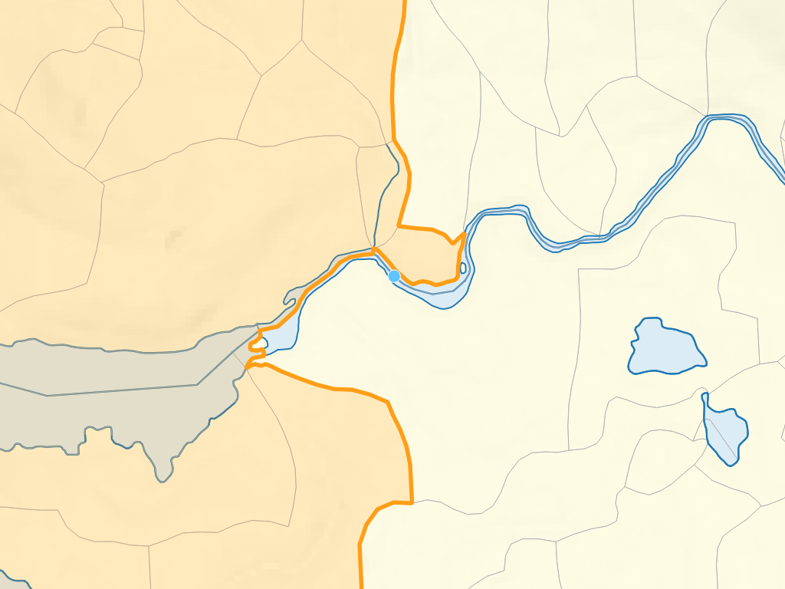

Usage
This document presumes a working familiarity with FWA data and spatial SQL queries with PostgreSQL/PostGIS.
Upstream / downstream analysis
The most typical use of fwapg is to answer the question - “what is upstream or downstream of these points of interest”? Before answering this question, we have to link the points of interest to the FWA streams.
Reference a single point to the stream network
If you simply have a single point location as X,Y (plus coordinate system identifier), use the function FWA_IndexPoint.
For example, to find the nearest point on the FWA stream network to location -123.7028, 48.3858:
SELECT *
FROM FWA_IndexPoint(-123.7028, 48.3858, 4326);
This snaps the input point to the closest stream - it returns information about the closest stream, minimum distance from input point to the stream, and the geometry of the closest point on the stream to the point:
linear_feature_id | gnis_name | wscode_ltree | localcode_ltree | blue_line_key | downstream_route_measure | distance_to_stream | bc_ind | geom
-------------------+-------------+--------------+-----------------+---------------+--------------------------+--------------------+--------+
710513719 | Sooke River | 930.023810 | 930.023810 | 354153927 | 350.2530543284006 | 24.228 | t |
This function is available via the fwapg feature service - you can experiment with it directly without having to install anything other than a web browser (zoom out to see the context in the default web map).
Reference many points to stream network
Referencing a single point is handy but generally it is necessary to join/snap an entire table of point geometries to FWA streams. We can download Environment Canada hydrometric stations as an example point dataset:
# download csv
wget http://dd.weather.gc.ca/hydrometric/doc/hydrometric_StationList.csv
# clean the header
sed '1s/.*/id,name,lat,lon,prov,timezone/' hydrometric_StationList.csv > hydrostn.csv
# Create a table of BC Albers points from the input lat/lon values
ogr2ogr \
-s_srs EPSG:4326 \
-t_srs EPSG:3005 \
-f PostgreSQL "PG:$DATABASE_URL" \
-lco GEOMETRY_NAME=geom \
-oo X_POSSIBLE_NAMES=lon* \
-oo Y_POSSIBLE_NAMES=lat* \
-oo KEEP_GEOM_COLUMNS=NO \
-sql "SELECT * FROM hydrostn WHERE prov='BC'" \
-nln hydrostn \
hydrostn.csv
Because FWA_IndexPoint is a table returning function, matching many points to the stream network in a single query can be done with a LATERAL join. Note that FWA_IndexPoint accepts point geometries directly, but only as BC Albers (EPSG:3005). For this example, just query the first five hydrometric stations.
SELECT
pts.id,
pts.name,
blue_line_key,
downstream_route_measure,
distance_to_stream
FROM
(
SELECT id, name, geom
FROM hydrostn
LIMIT 5 -- only 5 stations for this example
) pts
LEFT JOIN LATERAL
(
SELECT *
FROM
FWA_IndexPoint(geom, 100, 10) -- find up to 10 streams within 100m
) i ON true;
id | name | blue_line_key | downstream_route_measure | distance_to_stream
---------+-------------------------------------+---------------+--------------------------+--------------------
07EA004 | INGENIKA RIVER ABOVE SWANNELL RIVER | 359571145 | 6095.5541123470175 | 41.466
07EA004 | INGENIKA RIVER ABOVE SWANNELL RIVER | 359233576 | 0 | 47.233
07EA005 | FINLAY RIVER ABOVE AKIE RIVER | 359569942 | 42909.470879005145 | 47.372
07EA007 | AKIE RIVER NEAR THE 760 M CONTOUR | 359571761 | 29215.311821971634 | 41.002
07EB002 | OSPIKA RIVER ABOVE ALEY CREEK | 359573063 | 29005.40894424251 | 42.77
07EC002 | OMINECA RIVER ABOVE OSILINKA RIVER | 359571933 | 29316.915466924725 | 95.172
Check results
Matching points with variable precision and accuracy to FWA streams can be a challenge. In the example above, station 07EA004 has two streams within 50m - which one is correct? Station 07EC002 is 95m from the nearest stream, is this too far to be confident about the match?
For quality matching of points to streams it is essential to be familiar with the contents and lineage of the point data. Is there any information in the data that can improve the match? How were the points collected? These hydrometric station locations were likely digitized from paper maps that used a much different scale from FWA 1:20,000 mapping - using the closest point will not work reliably. However, the data in the name column is consistent and appears to be very reliable - we can improve the join based on matching to the FWA stream name:
CREATE EXTENSION IF NOT EXISTS pg_trgm;
SELECT
pts.id,
pts.name,
gnis_name,
gnis_name % pts.name::text as trgm_comparison
FROM
(
SELECT id, name, geom
FROM hydrostn
LIMIT 5
) pts
LEFT JOIN LATERAL
(
SELECT *
FROM
FWA_IndexPoint(geom, 100, 10)
) i ON true;
id | name | gnis_name | trgm_comparison
---------+-------------------------------------+----------------+-----------------
07EA004 | INGENIKA RIVER ABOVE SWANNELL RIVER | Ingenika River | t
07EA004 | INGENIKA RIVER ABOVE SWANNELL RIVER | |
07EA005 | FINLAY RIVER ABOVE AKIE RIVER | Finlay River | t
07EA007 | AKIE RIVER NEAR THE 760 M CONTOUR | Akie River | t
07EB002 | OSPIKA RIVER ABOVE ALEY CREEK | Ospika River | t
07EC002 | OMINECA RIVER ABOVE OSILINKA RIVER | Omineca River | t
If this is good enough, the query can be adjusted to return only the stream within 100m where the point stream name matches the FWA stream name (according to pg_trgm):
SELECT
pts.id,
pts.name,
blue_line_key,
downstream_route_measure
FROM
(
SELECT id, name, geom
FROM hydrostn
LIMIT 5
) pts
LEFT JOIN LATERAL
(
SELECT *
FROM
FWA_IndexPoint(geom, 100, 10)
) i ON true
WHERE gnis_name % pts.name::text;
id | name | blue_line_key | downstream_route_measure
---------+-------------------------------------+---------------+--------------------------
07EA004 | INGENIKA RIVER ABOVE SWANNELL RIVER | 359571145 | 6095.5541123470175
07EA005 | FINLAY RIVER ABOVE AKIE RIVER | 359569942 | 42909.470879005145
07EA007 | AKIE RIVER NEAR THE 760 M CONTOUR | 359571761 | 29215.311821971634
07EB002 | OSPIKA RIVER ABOVE ALEY CREEK | 359573063 | 29005.40894424251
07EC002 | OMINECA RIVER ABOVE OSILINKA RIVER | 359571933 | 29316.915466924725
This should produce a more reliable output than matching only on the closest stream. However, simply filtering on a true/false string comparison is likely still error prone - for the first station in the list, what would happen if Swanell River was within 100m? To ensure any subsequent upstream analysis are done on the correct stream system, matches for points in this dataset will generally have to have to be manually QA’ed.
Other possible attributes for improving matches could include:
1:50,000 watershed code (the FWA provides a lookup between 50k and 20k watershed codes)
channel width or similar (compare to the FWA stream order, a point at 1m width should not be matched to a 5th order FWA stream)
If no additional information is available, it may be best to filter results where there are >1 matches within 100m (or whatever tolerance works with your data) and complete the matching of these points manually.
To cut down on the code for below examples, we can create a table holding the results:
CREATE TABLE hydrostn_events AS
SELECT
pts.id,
pts.name,
i.blue_line_key,
i.downstream_route_measure,
i.wscode_ltree,
i.localcode_ltree,
i.distance_to_stream,
i.geom::geometry(Point, 3005)
FROM
(
SELECT id, name, geom
FROM hydrostn
) pts
LEFT JOIN LATERAL
(
SELECT *
FROM
FWA_IndexPoint(geom, 100, 10)
) i ON true
WHERE gnis_name % pts.name::text
ORDER BY pts.id;
Watershed codes
Once features are referenced to the stream network, determining what is upstream/downstream is done by comparing the watershed codes and the blue_line_key / route_measure values.
From the FWA user guide, the watershed codes are a hierarchical key that provides the ability to process both upstream and downstream queries. The source FWA database stores these codes as strings, with trailing -000000- values to fill in the full 143 characters.
fwapg translates the watershed code strings to ltree types for easier searching of the hierarchical tree-like structure (these codes are stored in columns wscode_ltree and localcode_ltree in the various tables).
While the ltree module provides operators simple hierarchy queries (eg ltree @> ltree, is left argument an ancestor of right (or equal)), upstream/downstream queries are not quite as simple as ancestor/descendant queries of the codes. Therefore, functions FWA_Upstream and FWA_Downstream are provided to make these operations simpler.
Query downstream
Using FWA_Downstream enables doing this with a join:
SELECT
e.id,
e.name,
SUM(st_length(s.geom)) / 1000 as length_dnstr_km
FROM (SELECT * FROM hydrostn_events LIMIT 5) as e
INNER JOIN whse_basemapping.fwa_stream_networks_sp s
ON FWA_Downstream(
e.blue_line_key, e.downstream_route_measure, e.wscode_ltree, e.localcode_ltree,
s.blue_line_key, s.downstream_route_measure, s.wscode_ltree, s.localcode_ltree
)
GROUP BY e.id, e.name
ORDER BY e.id;
id | name | length_dnstr_km
---------+-------------------------------------+--------------------
07EA004 | INGENIKA RIVER ABOVE SWANNELL RIVER | 908.3217090864651
07EA005 | FINLAY RIVER ABOVE AKIE RIVER | 996.3101858316527
07EA007 | AKIE RIVER NEAR THE 760 M CONTOUR | 1011.4124142994692
07EB002 | OSPIKA RIVER ABOVE ALEY CREEK | 834.4111401643679
07EC002 | OMINECA RIVER ABOVE OSILINKA RIVER | 778.6774554185706
Note that this is only the downstream portion present in the FWA data - if the point is in the Columbia basin or similar, portions of stream not in BC are not included.
Query upstream
An upstream query is almost the same, using FWA_Upstream:
SELECT
e.id,
e.name,
SUM(st_length(s.geom)) / 1000 as length_upstr_km
FROM (SELECT * FROM hydrostn_events LIMIT 5) as e
INNER JOIN whse_basemapping.fwa_stream_networks_sp s
ON FWA_Upstream(
e.blue_line_key, e.downstream_route_measure, e.wscode_ltree, e.localcode_ltree,
s.blue_line_key, s.downstream_route_measure, s.wscode_ltree, s.localcode_ltree
)
GROUP BY e.id, e.name
ORDER BY e.id;
id | name | length_upstr_km
---------+-------------------------------------+--------------------
07EA004 | INGENIKA RIVER ABOVE SWANNELL RIVER | 8355.325367888996
07EA005 | FINLAY RIVER ABOVE AKIE RIVER | 41388.6738526307
07EA007 | AKIE RIVER NEAR THE 760 M CONTOUR | 4999.9129992270255
07EB002 | OSPIKA RIVER ABOVE ALEY CREEK | 5907.417221603829
07EC002 | OMINECA RIVER ABOVE OSILINKA RIVER | 10042.880207799402
As with the downstream query, only features within BC are returned. The above length_upstr_km will be incorrect for trans-boundary watersheds.
More general upstream queries are possible as well:
how many stations are upstream of Hope?
SELECT
COUNT(*)
FROM hydrostn_events e
WHERE FWA_Upstream(
356364114, 160400, '100'::ltree, '100.113848'::ltree,
e.blue_line_key, e.downstream_route_measure, e.wscode_ltree, e.localcode_ltree
);
count
-------
83
how much additional stream network is isolated by the Site C dam? (ie, upstream of Site C, but not upstream of the Bennet Dam)
SELECT
SUM(ST_Length(geom)) / 1000 as length_km
FROM whse_basemapping.fwa_stream_networks_sp s
WHERE FWA_Upstream(
359572348, 1597489, '200.948755'::ltree, '200.948755.816999'::ltree,
s.blue_line_key, s.downstream_route_measure, s.wscode_ltree, s.localcode_ltree
) AND NOT FWA_Upstream(
359572348, 1706733, '200.948755'::ltree, '200.948755.871814'::ltree,
s.blue_line_key, s.downstream_route_measure, s.wscode_ltree, s.localcode_ltree
);
length_km
--------------------
28974.584934736216
Generate watershed
With FWA_Upstream in hand, creating a watershed boundary now seems straightforward - find the fundamental watersheds upstream and aggregate them. For example, to extract the watershed upstream of hydrometric station 08HA002 as a single polygon, using unaltered FWA linework:
SELECT
p.id,
ST_Union(w.geom) AS geom
FROM hydrostn_events p
INNER JOIN whse_basemapping.fwa_watersheds_poly w
ON FWA_Upstream(
p.wscode_ltree, p.localcode_ltree,
w.wscode_ltree, w.localcode_ltree
)
WHERE p.id = '08HA002'
GROUP BY p.id;
This successfully creates the watershed boundary:

But if we look closely at the fundamental watersheds near the point, the watershed boundary is a bit different from what might be expected:

The local_watershed_code value for the stream at the point location is 920.252823.584332 - the three highlighted fundamental watersheds all have lower local_watershed_code values and are thus not returned by FWA_Upstream. This is typical for points found on FWA waterbodies - the fundamental watersheds making up waterbodies are defined by a complex set of rules.

To clean up this issue and others, fwapg provides the function FWA_WatershedAtMeasure.
For a single point, we can provide the parameters (blue_line_key, downstream_route_measure) directly:
SELECT * FROM FWA_WatershedAtMeasure(354155148, 49129.75)
Producing this output:

Like FWA_IndexPoint, this function is available via the fwapg feature service - you can experiment with it directly without having to install anything other than a web browser.
Also like FWA_IndexPoint, FWA_WatershedAtMeasure is a table returning function. When joining to the source table, use a LATERAL join to run the query on each point. Note that this can be very resource intensive, you may want to restrict the query to just a handful of points.
SELECT
p.id,
w.geom
FROM hydrostn_events p
LEFT JOIN LATERAL
(
SELECT *
FROM FWA_WatershedAtMeasure(p.blue_line_key, p.downstream_route_measure)
) w ON true
WHERE p.id = '08HA002';